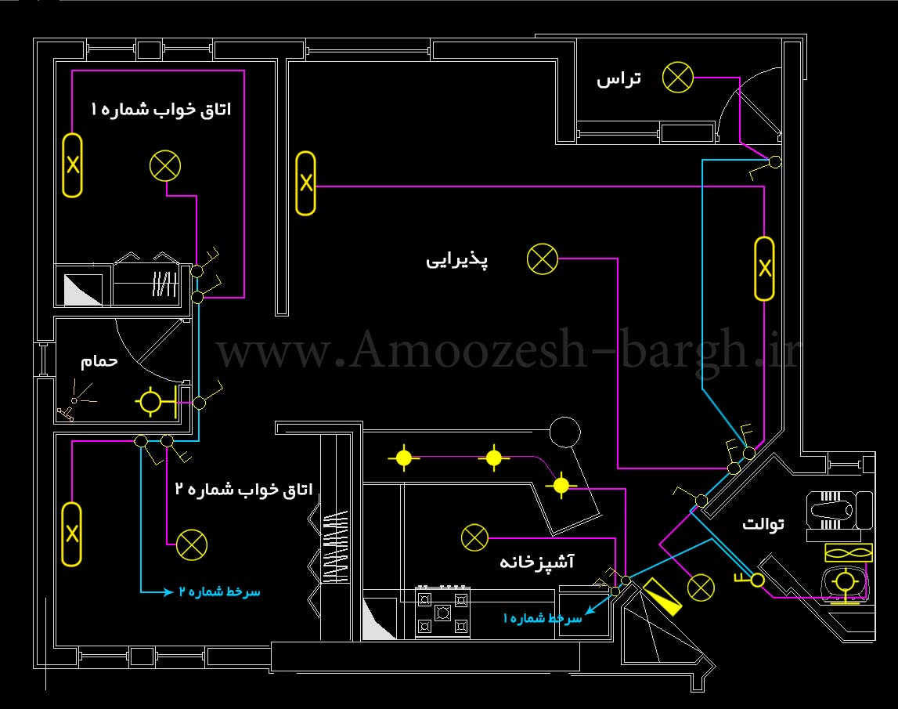

شناسایی نوع سیستم کلی برق رسانی و منبع اصلی آن
تک فاز / سه فاز
محل ورود برق: تابلو اصلی، کنتور، انشعاب
محل و وضعیت تابلو برق فرعی
رایزرهای ورودی کابل
مسیرهای قابل مشاهدهی داکت یا لوله برق
محل و تعداد چراغها (سقفی، دیواری، اضطراری)
نوع چراغها: LED، مهتابی، هالوژن و...
محل کلیدهای کنترل روشنایی
محل و تعداد پریزها (معمولی، صنعتی، سهفاز)
ارتفاع نصب پریزها
نوع سیمکشی (روکار/توکار)
رایزرها یا عبور کابلهای اصلی به طبقات دیگر
فن، پمپ، آسانسور، دوربین مداربسته، اعلام حریق و...
مسیر کابلکشی تجهیزات خاص
وجود فیوز یا کلید محافظ جان (RCD)
سیستم ارت (زمین)
وضعیت سلامت کابلها (سالم/فرسوده)
در این بخش یک پلان ساده جهت جانمایی تابلو، روشنایی، پریزها و مسیر کابلها رسم شده است و یک راهنمای علائم (Legend) برای نمادهای مورد استفاده آورده شده است. برای آموزش و برداشت سریع، از نمادهای استاندارد و خوانا استفاده شده است.
نمادهای پرکاربرد در نقشههای برق:

تذکر: این پلان نمونه برای آموزش است. هنگام برداشت واقعی اندازهها را با متر ثبت کرده و در نقشهی CAD یا PDF پیاده کنید.